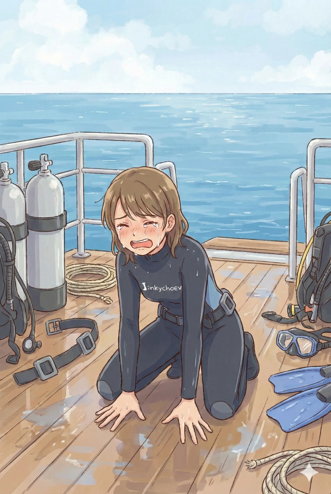
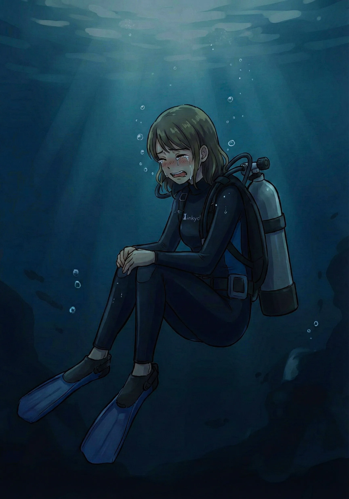
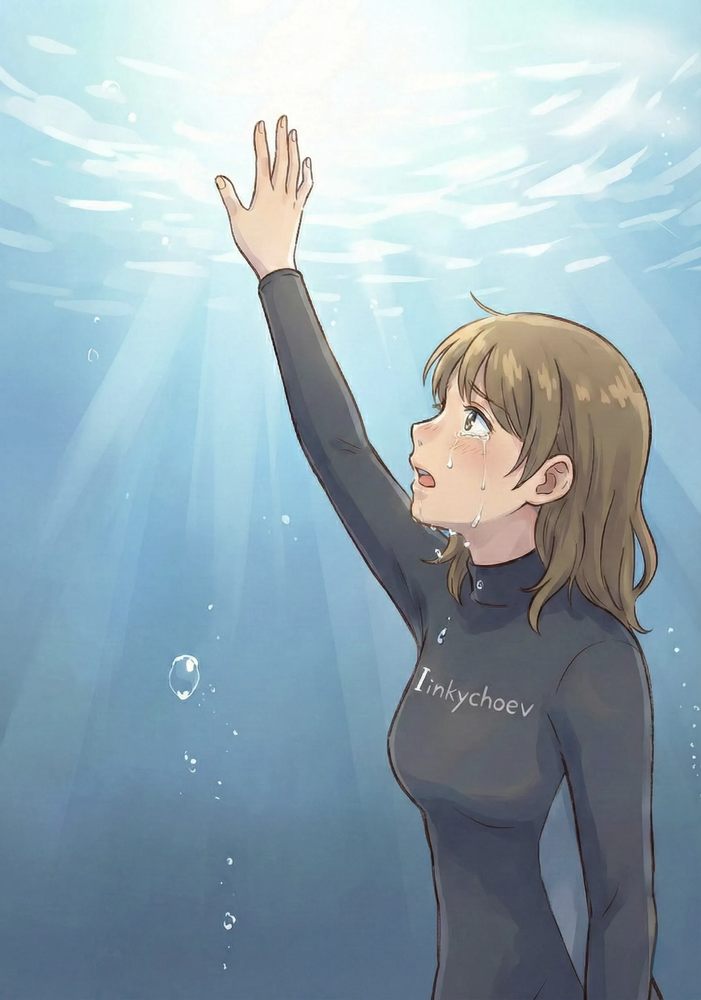
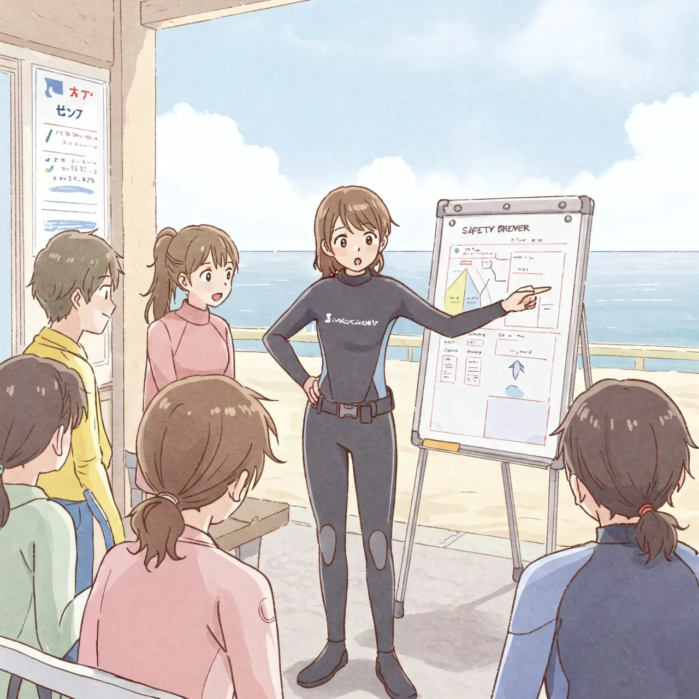
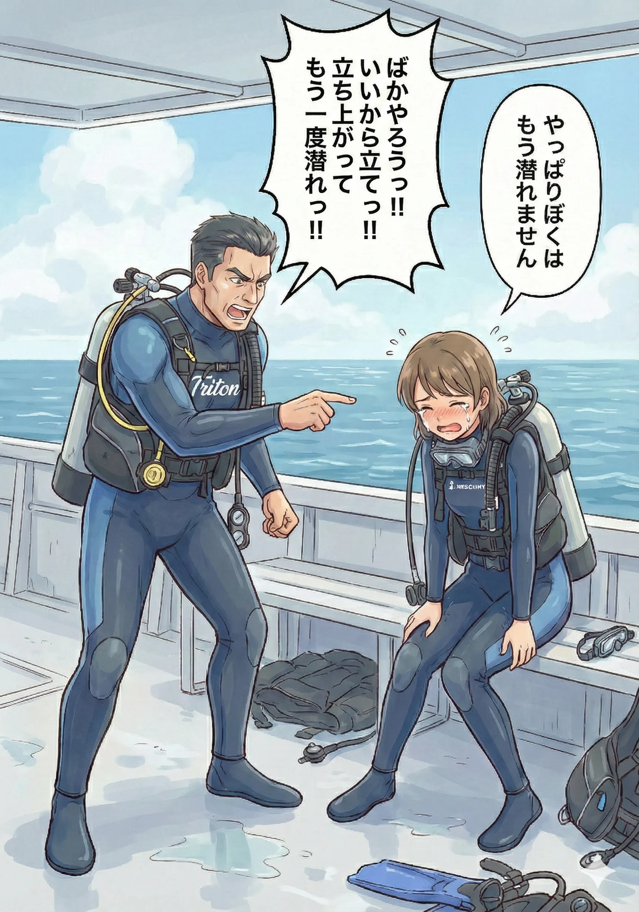
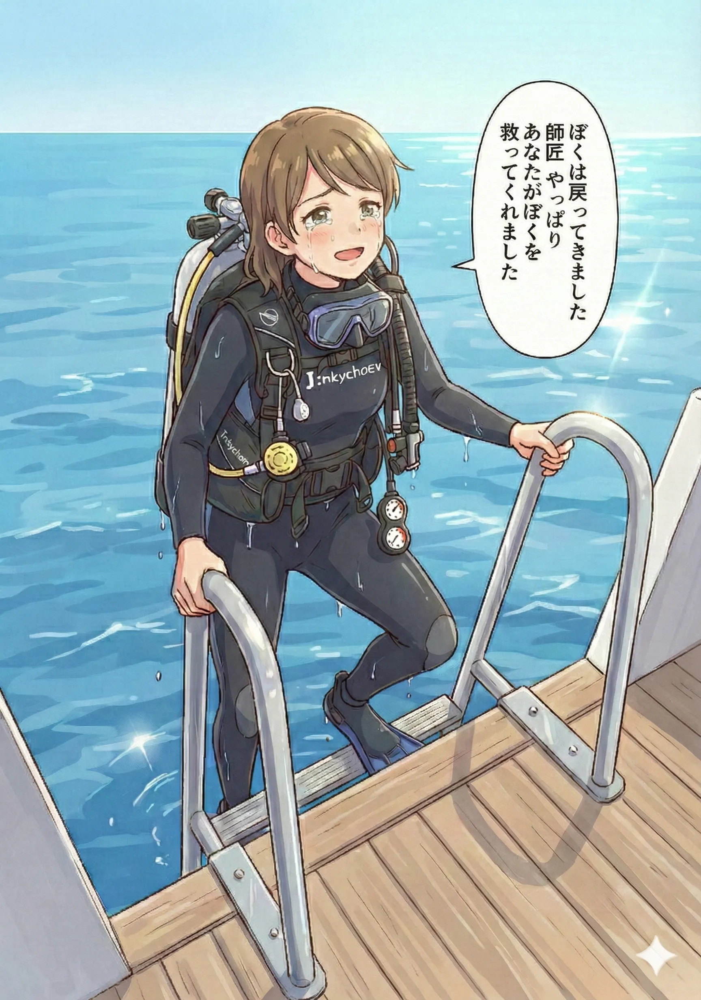

最初にお断りしておきますが今日のこの日記も 1999 年 3 月 21 日串本町住崎でぼくがやらかしたエア切れによるゲスト置き去り事件とその後を書きます。ですが長かった整理で実は内心として、あの住崎でのできごとやそれ以降のことが、ぼくの心の中のあるべき位置にすでに布置されていて、もう語ることはあまりないと感じています。
昨年 5 月から始まったぼくの 27 年前への旅は、たまたまそういう結果を産みました。狙ったものではありませんでした。でも布置された。だからあまりもう語ることはない。そう感じています。
ぼくは過去や現在を布置しないと未来に生きていけない人種なので、傍から見てると不快だったかもしれません。これからもきっと見ていて不快です。
ごめんなさい。でもこうしないとぼくは生きていけません。だから不快だと思ったらページをそっと閉じてください。
今日の日記は住崎事件のまとめのように見えます。ですが本当は生成できてしまった画像の供養が目的です。重ねてごめんなさい。

1999 年 3 月 21 日にぼくは参加しているダイブマスターコースでガイドとして 4 人のチームで串本の住崎でガイドの実習をしていました。
その時の詳細はログブックに書いていますのでそちらを参照してください。
またなんでそんなことになってしまったのかの分析は "Dive #84: ゲストや仲間への申し訳け無さ" や "Dive #98: 何もできないダイブマスターに始まってぼくの話" に書いていますので、よろしければそちらもご参照ください。
結局ぼくはぼくが想定できなかった例外事象にとても脆弱なのでした。
とにかくその住崎でぼくはエア切れを起こしてしまいました。いつもの自分のままであり、いつもの通りの冷静さであればそんなことにはならなかったと思います。
そしてぼくはエア切れを起こし緊急スイミングアセントで水面に生還します。
でもぼくは 2 人のゲスト、といっても 1 人はぼくの指導インストラクターですけれど、2 人のゲストを水中に置き去りにしてしまった。
事故になんかはならなかったし、ぼく以外の人はヒヤリハットにすらかすらなかった。物理的現実はそうだったのですが、ぼくには 2 人殺したとか思えませんでした。
その夜号泣しながらぼくはダイブマスターコースをやめたいと指導インストラクターのジュンちゃんにお願いしました。
それは将来今度は本当にゲストを殺してしまうということではなく、もうすでに 2 人殺してしまっている、ぼくにはそうとしか思えなかったのでした。

でも実際には物理的な事故にはなっていない。かすりもしていない。でもぼくが 2 人殺したという内心の事実は覆い返そうと思ってもできなかったのでした。
ぼくは 2 人殺しているのに誰も叱責も断罪も罰してもくれない。誰も罰してくれず叱責もしてくれないぼくは孤独でした。ログに書いている孤独な人殺しというのはそういう意味なのでした。
誰も罰してくれないぼくを、ぼく自身が 27 年間罰し続ける他なかったのでした。

ぼくみたいな人間はインストラクターや開業を目指すべきじゃない、そう思って、ぼくはまもなく本当にダイブマスターコースの受講をやめてしまいます。
そうは言っても、もともとダイビングも海も嫌いではないのですから、プロになることをやめようと諦めてからも、もしかするとアマチュアとしてなら、まだ潜れるのではないかと数年はジタバタとします。
でも結局ぼくは何度も何度も潜れなくなっているという事実に直面することになります。
ぼくはもうやっぱりもう潜れない。
そう思わざるを得ませんでした。
海もダイビングもたくさんのダイバーたちも大好きなままなのに、ぼくは潜れなくなってしまった。
そして別件で罹ってしまった病気の闘病でダイビングのことを忘れていきます。
忘れていると思っていました。
でもそれは意識の表層に登ってこないだけで、恐らくぼくの心の中で深海流のように、海やダイビング、そしてダイバーたちへの気持ちは、ずっと流れ続けていたのかもしれません。

そんなある日、画像生成 AI で遊んでいると、たまたま画像のようなイラストが生成できてしまいました。
ぼくはまだ 20 代に見える若いこの娘に、ぼくがやっていたブリーフィングを喋らせたいと思ってセリフをつけました。それが "Dive #3: ファンダイブ・ブリーフィング" になります。
それからいろいろ止まらなくなりました。インストラクターちゃんシリーズ、ダイブマスターちゃんシリーズは全てフィクションですが、ぼくの実体験をお出汁のように入れ込んでいます。
そのうち書く内容がフィクションではなくて、ぼくの話に移り変わっていきます。
ぼくの話を続けるうちに、ぼくの年齢をも考えるようになり、そしてまだぼくが人生の師であると思っている師匠にまだこれまでのお礼も言えてない、そしてあれだけぼくを支えてくれた師匠に開業に至れなかった自らの至らなさのお詫びもできていない、そう思って、たまたまカムチャッカの巨大地震で太平洋沿岸に津波警報が発令された日に、師匠に電話をしました。23 年ぶりに聞く師匠の声でした。
そしてその時の話で、師匠のお店のホームページがプロバイダーの事情で消失してしまって師匠が困っていることを知ります。ホームページの復旧ならぼくにだって不可能ではありません。だからお礼とお詫びを言いに行きがてら、師匠の手伝いをしたいと思って串本に伺うことを約束します。
ただぼくはそのときウェットスーツをオーダーメイドしていました。それはダイビングを再開する目的ではなく、スキンダイビング装備で須磨の海岸あたりをぷかぷか浮かぼうと、それくらいの目的でスーツを作ったのでした。
スーツを作ったことを電話で師匠にうっかり話したところ、持ってこいと言われました。え？師匠まじっすか？ぼく、もう潜れませんよ？と思ったのですが、それは口にしませんでした。ぼくが尊敬する師匠に逆らうなんてぼくの辞書の中にはないからです。

そして去年の 2025 年 9 月 10 日、ぼくは師匠とゲストさんお一人と串本の備前のボートの上にいました。
いきなり 1 本目で大失敗したことはログに書きました。
ぼくはやっぱり潜れない、それはもちろんこの 1 本目の失敗、21 年ぶりに潜るというブランク、失われたスキル、失われた考え方、失われた判断力、たしかにそういったものもありましたが、それよりもぼくはやはりまだ 27 年前の住崎からまったく浮上できていなかったのでした。
でも、やっぱりぼくは潜れないと言うぼくを師匠は許しませんでした。
「馬鹿野郎っ！！誰がお前の面倒を見てると思ってる！？バカなことを言ってないでウェイトを組み直せ！！そして立て！！もう一度立ち上がって、エントリーしろ！！もう一度潜れ！！潜れないとか俺が許さん！！」
たぶん師匠がぼくをこのときほど激しく怒ったことはこれまでにありません。
この日のダイビングもぼくにとっては悲惨な低レベルなダイビングでした。まともに潜ることができたという気には、ぼくはとてもなれませんでした。オープンウォーターの認定すら得られないほど、とても酷くてとても危険なダイバーだと思わざるを得ませんでした。
でもこの日から何日かおきに潜らせてもらって、2 週間くらいで合計 13 本。ぼくはもしかすると潜れるかもしれない。そう串本の海の中でそう思い始めていました。
21 年の間に失われたスキル、思考、判断力は、また潜ってトレーニングで整えることで、ある程度復旧することは当たり前にわかります。だからたぶんぼくは海に戻れる。そう思うようになっていきました。

だからぼくは思うのです。27 年それと気が付かずに苦しんできたぼくを救ってくれたのは、また師匠だったって。
だからぼくはまた師匠の元に通おうと思います。収入も若い頃と違って無いに等しいくらい貧弱ですし、なにより現在は体に障害もあります。ですから昔のように足繁く通うというわけには行きませんけれど。
でも師匠は昔から困っている人には手を伸ばす人でした。ぼくが阪神・淡路大震災で困っているときも助けてくれました。ぼく以外の人にもそうでした。
だからぼくにとっての師匠はダイビングの師匠と言うだけではなく、人生の師なのでした。
ぼくはまた海に戻ります。これまでも大好きだった串本の海に戻ります。大好きだったダイバーたちの元に戻ります。
ぼくはぼくがいることを許される、その場所に戻ります。
27 年……長かった……
でも 1999 年 3 月 21 日からやっと浮上できました。
ぼくは戻ります。
あとは失われたものを取り戻すだけです。
あ、でも思い出しました。まだ師匠にお礼もお詫びも言ってない！！
P.S.
なんだか 1999 年 3 月 21 日の住崎でのエア切れによるゲスト置き去り事件の自分の中での布置を終えた感覚があるので、エンディングテーマっぽいのをつけておきます。そういうつもりでビルドした曲ではないのですけれど。
住崎からのぼくの物語はなんだかあまりに起承転結がありすぎて、嘘くさいのですが、これがぼくにとっての住崎エア切れによるゲスト置き去り事件のぼくのなかでの個人史上の真実なのでした。